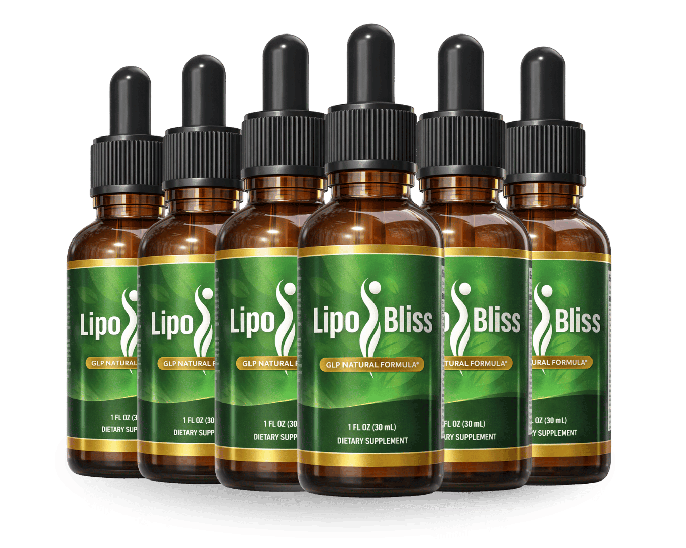

What Is LipoBliss And How Does It Work?
LipoBliss is a natural dietary supplement formulated to support healthy weight management, appetite control, and metabolic wellness, particularly for individuals experiencing age-related metabolic slowdown. Designed as an easy-to-take liquid formula, LipoBliss combines targeted botanicals, essential minerals, and key amino acids that work synergistically to support the body's natural GLP-1 satiety pathway.
As women and men age past 45, natural hormonal shifts and declining metabolic efficiency can make managing body weight significantly more challenging. Persistent cravings, mid-afternoon energy crashes, and slow fat metabolism often lead to frustration despite maintaining consistent diet and exercise routines. LipoBliss addresses these core challenges by promoting natural satiety signals, helping you feel fuller for longer while supporting your body's innate calorie-burning potential.
Rather than relying on harsh stimulants or extreme restrictive diets, LipoBliss operates through a gentle, daily nutritional approach. Its liquid dropper delivery ensures rapid absorption of key active compounds like Maca Root Extract, Green Tea Leaf Extract, and Chromium Picolinate. By supporting blood sugar balance already within a normal range and curbing sudden sugar cravings, LipoBliss helps users sustain steady, natural energy throughout the day while gradually working toward their body composition goals.
LipoBliss Ingredients
The effectiveness of LipoBliss lies in its carefully chosen blend of natural botanicals, trace minerals, and metabolic amino acids. Every component is selected for its documented role in supporting appetite regulation, thermogenesis, and cellular energy production:
- Chromium Picolinate (7mcg, 20% DV): An essential trace mineral vital for healthy insulin function and carbohydrate metabolism. Chromium helps streamline cellular glucose uptake, easing blood sugar fluctuations that trigger sudden hunger pangs.
- Maca Root Extract: Traditionally valued for enhancing stamina, vital energy, and hormonal harmony. Maca Root helps counter the physical fatigue and hormonal shifts that often hinder weight management efforts in adults over 45.
- African Mango Seed Extract: Sourced from Irvingia gabonensis, this botanical has been studied for its ability to support healthy leptin sensitivity, encouraging natural fullness signals and helping manage body fat storage.
- Green Tea Leaf Extract: Rich in epigallocatechin gallate (EGCG) catechins and natural antioxidants, Green Tea Leaf promotes thermogenic metabolism and daily calorie expenditure without causing nervous jitters.
- Coleus Forskohlii Root Extract: Containing active forskolin, this botanical extract helps stimulate enzymes that break down stored triglycerides, encouraging a leaner and more toned body structure.
- Gymnema Sylvestre Leaf Extract: Known historically as the "sugar destroyer," Gymnema helps dull sweet taste perception and reduces appetite for high-carb snacks between meals.
- Cayenne Pepper Fruit Extract: Packed with capsaicinoids that activate thermogenesis, aiding natural calorie burn while supporting digestive comfort.
- L-Carnitine HCl: An essential amino acid transport compound that shuttles fatty acids directly into cellular mitochondria to be converted into usable daily energy.
- Grapefruit Seed Extract: Rich in antioxidant bioflavonoids that support gut digestive health and nutritional absorption as part of an active lifestyle.
LipoBliss Side Effects
LipoBliss is formulated using 100% natural, non-GMO botanical extracts and minerals manufactured in an FDA-registered, GMP-certified facility in the United States. It contains no synthetic fillers, harsh chemical stimulants, or artificial preservatives, making it generally well-tolerated for daily consumption.
Most users report smooth digestibility without jitteriness, digestive upset, or sleep disruptions. As with any dietary supplement, individual tolerance can vary. New users are advised to stick to the recommended daily dosage and review the full ingredient list to rule out individual botanical allergies.
Individuals with pre-existing medical conditions, pregnant or nursing mothers, and those taking prescription medications for blood sugar or blood pressure should consult a healthcare professional before integrating LipoBliss into their daily regimen.
LipoBliss Dosage
Using LipoBliss is straightforward and fits easily into any daily morning routine. The manufacturer recommends taking 1 mL (approximately 2 full droppers) once per day, ideally in the morning or about 30 minutes before your first major meal.
You may place the drops directly under your tongue for fast sublingual absorption or mix them into a small glass of water or tea. For maximum efficacy, consistency is essential. The active herbal compounds and trace minerals build up in the body over time, with most users observing the best results when following a continuous protocol of 90 to 180 days.
Do not exceed the recommended daily dose unless advised by a medical professional. Storing the bottle in a cool, dry place away from direct sunlight will preserve ingredient potency throughout your usage.
LipoBliss – Refund Policy
Every order of LipoBliss comes backed by a risk-free 60-day money-back guarantee. This 100% satisfaction promise allows customers to try the formula thoroughly and evaluate their personal progress over two full months.
If for any reason you are not completely satisfied with your experience — whether you feel your cravings haven't diminished or simply changed your mind — you can request a complete refund of your purchase price within 60 days of ordering.
To initiate a return, customers simply contact customer support via email at the address provided on the official receipt. The refund process is designed to be prompt and hassle-free, demonstrating the manufacturer's confidence in their product quality.
LipoBliss Customer Reviews
 Susan R.
Sacramento, CA
Verified Purchase – 6 Bottles
Susan R.
Sacramento, CA
Verified Purchase – 6 Bottles
"I was embarrassed to even talk about it. The bloating, the tight waistbands, the feeling I'd never look like my old self again — I just lived with it for years. My daughter found LipoBliss and bought me a 6-bottle kit. Six weeks in and I went swimming with my grandkids for the first time in ages without needing a cover-up. Highly recommend!"
 Patricia W.
Tampa, FL
Verified Purchase – 3 Bottles
Patricia W.
Tampa, FL
Verified Purchase – 3 Bottles
"The ingredients in this formula are serious. I researched Maca Root, Green Tea, Coleus Forskohlii, and Chromium before trying it. I've been taking LipoBliss for five months now. I've dropped two pants sizes, my energy at work is so much better, and the 3 p.m. sugar craving slump is completely gone."
 Karen T.
Austin, TX
Verified Purchase – 6 Bottles
Karen T.
Austin, TX
Verified Purchase – 6 Bottles
"The afternoon cravings were ruining my routine. I couldn't get through the day without raiding the pantry for sweets. Started LipoBliss about 8 weeks ago and the difference is night and day. The cravings are gone, I fit into jeans I hadn't worn in three years, and I actually have energy for morning walks."
LipoBliss – Where To Buy
If you decide to try LipoBliss, it's important to be careful about where you purchase it. Currently, LipoBliss is not officially sold on marketplaces such as Amazon, eBay, or Walmart.
Some users have reported finding similar-looking bottles on third-party platforms, but these products may not be authentic. Purchasing from unofficial sellers can raise concerns about quality, safety, and ingredient integrity, and orders made outside the official source may not be covered by the manufacturer's 60-day money-back guarantee.
For this reason, most customers recommend purchasing LipoBliss only through the official website. Ordering directly from the official source helps ensure you receive the genuine product, manufactured under proper quality standards, with access to customer support and refund protection.
To avoid unnecessary risks and ensure a safe experience, always verify that you are ordering from the official LipoBliss website before completing your purchase.
To ensure you’re getting the authentic product, most users choose to visit the official website directly.
Is LipoBliss A Scam?
Based on a thorough analysis, LipoBliss does not appear to be a scam. It is a legitimate, well-formulated liquid supplement created to support healthy weight management, appetite control, and daily energy as part of a consistent wellness routine.
The ingredients used in LipoBliss show promising potential in supporting satiety signaling, thermogenic fat metabolism, and cellular energy production — key factors often associated with struggles like slow metabolism, sugar cravings, and mid-day energy crashes.
In addition to using plant-based, carefully selected ingredients, LipoBliss is manufactured under strict quality controls and GMP-certified standards in the USA, helping ensure safety, consistency, and reliability with every bottle.
Many users from different backgrounds report improvements in daily energy, cravings, stomach comfort, and clothes fit, making LipoBliss a practical option for those seeking a natural and sustainable approach to long-term weight management.
LipoBliss is backed by a 60-day money-back guarantee, allowing customers to try the product with confidence. This refund policy reflects the manufacturer's commitment to transparency and customer satisfaction.
If you're looking for a natural supplement to support healthy weight loss and appetite control without relying on harsh stimulants or extreme diets, LipoBliss may be worth considering, especially when purchased directly from the official website.
For those who want to verify product details or check current availability, the official LipoBliss website remains the safest and most reliable option.
